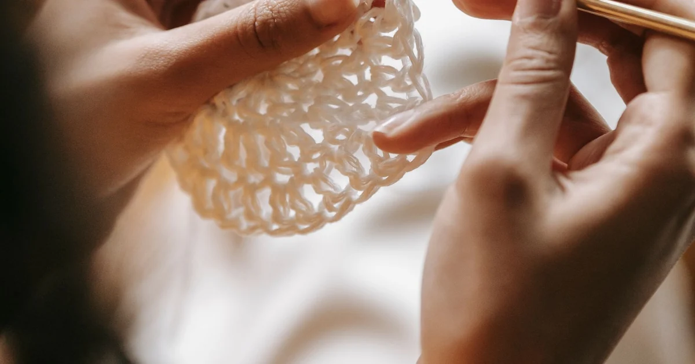
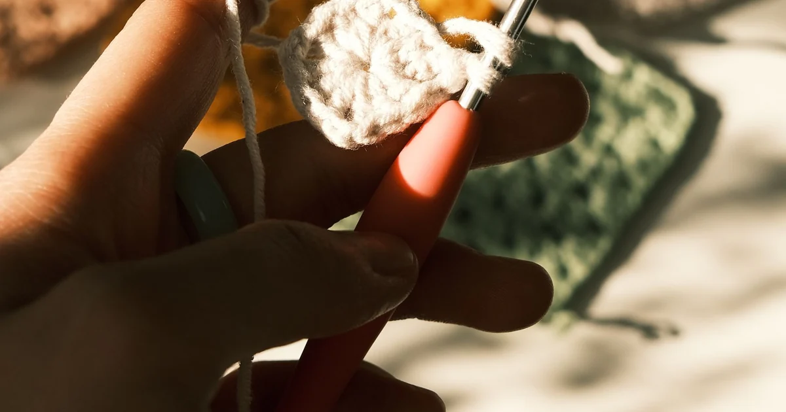
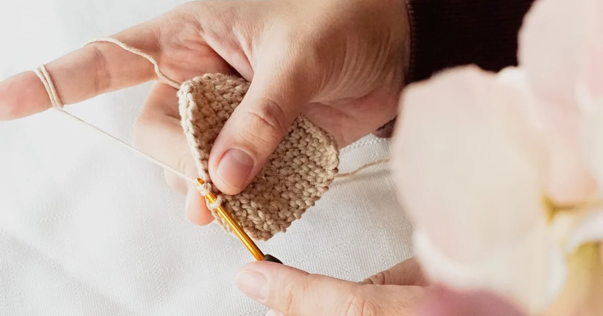
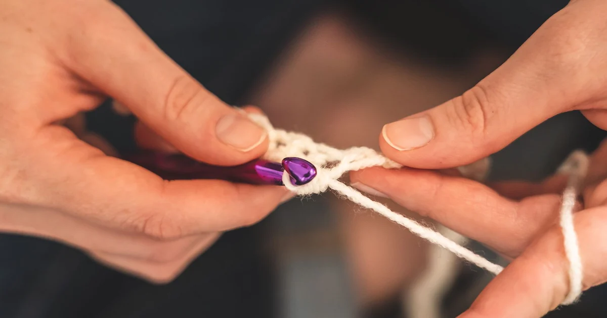
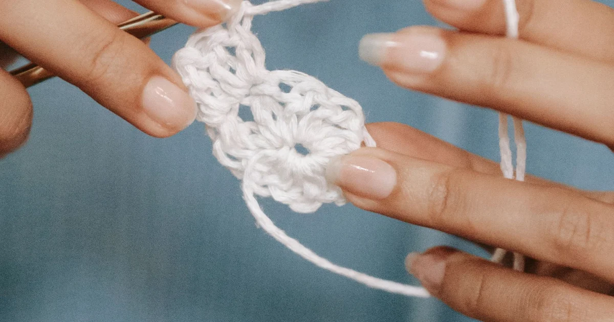
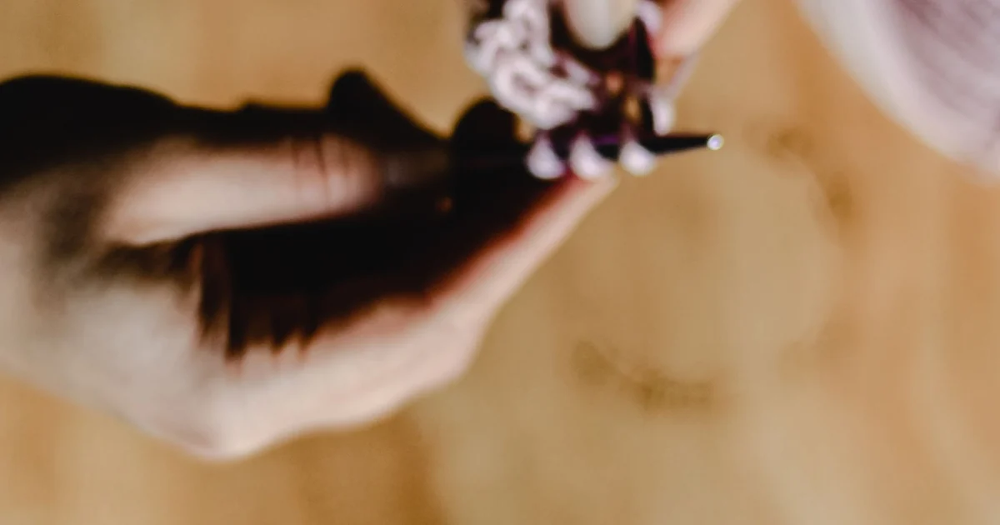

Crochet BasicsHow to Hold a Crochet Hook and Yarn as a Beginner
Find a comfortable pencil or knife hold and learn to feed the yarn without straining your hand.
Browse category
Explore clear, beginner-friendly crochet tutorials in crochet basics. Start with the basics, practice at your own pace, and follow the linked guides whenever you need another explanation.

Crochet BasicsFind a comfortable pencil or knife hold and learn to feed the yarn without straining your hand.

Crochet BasicsMake an adjustable slip knot that sits on your hook loosely enough for the first chain.

Crochet BasicsChain stitches with even loops, count your foundation chain, and avoid a tight starting edge.

Crochet BasicsWork a US single crochet from the first chain to the final pull-through, one loop at a time.

Crochet BasicsCount chain V’s and stitch tops accurately, including where row-edge stitches belong.
 Crochet Basics
Crochet BasicsFinish a row, make the pattern’s turning chain, rotate the fabric, and begin the next row.

Crochet BasicsDecode common US abbreviations and repeat symbols before you start a pattern.
 Crochet Basics
Crochet BasicsKeep row edges even by finding first and last stitches, using markers, and checking row counts.